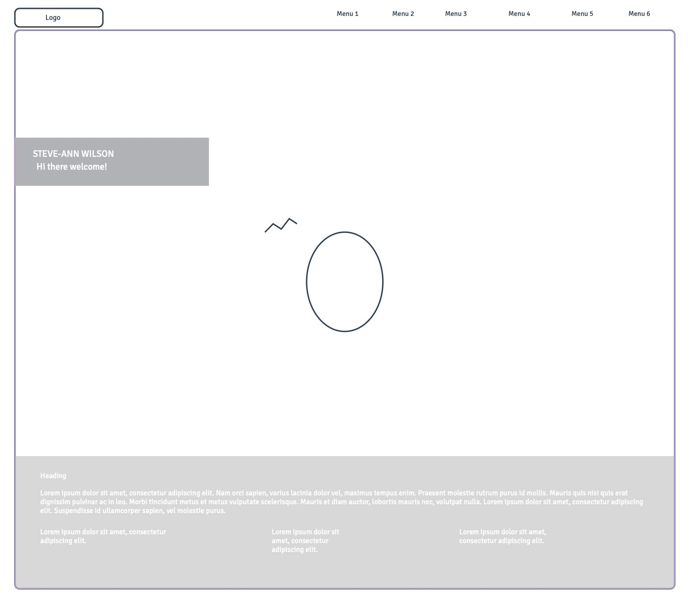
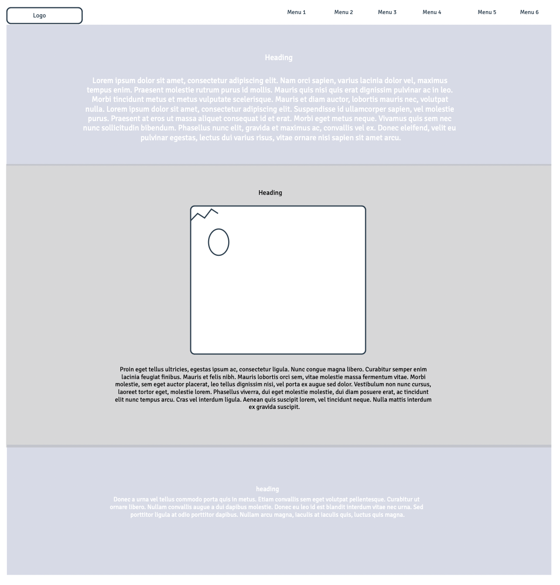
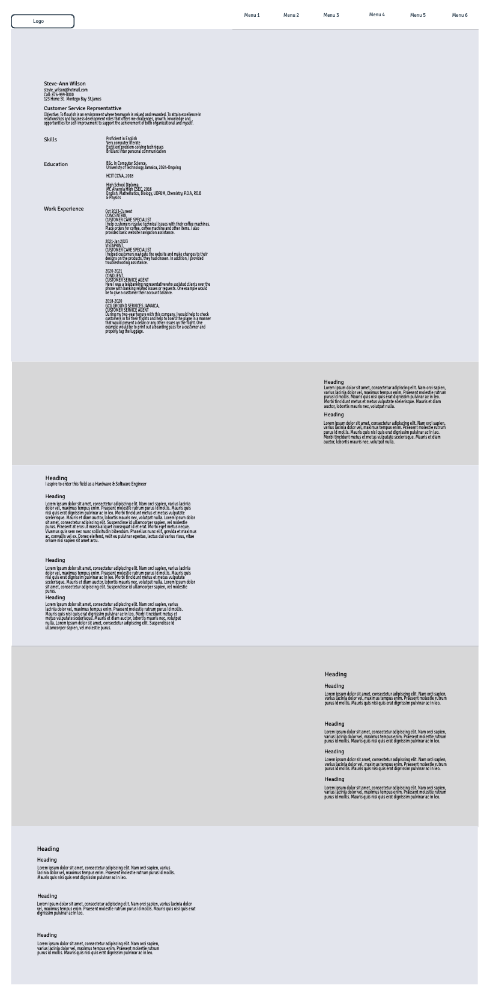
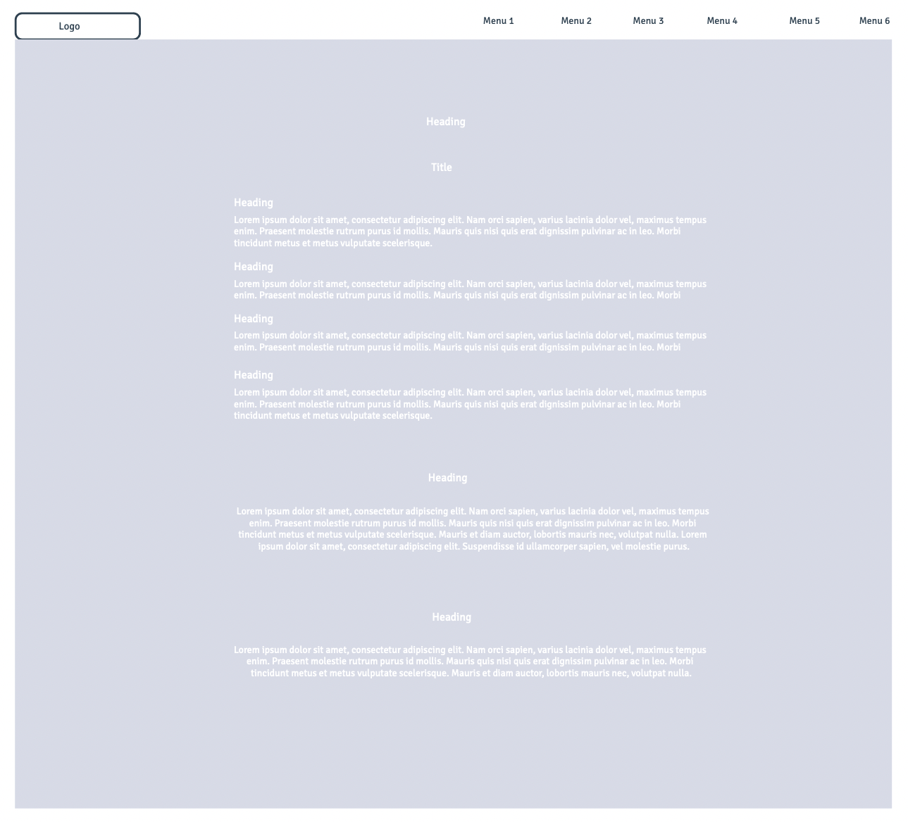

Background Page Wireframe

Personality Page Wireframe

Profession Page Wireframe

Personal Developement Page Wireframe

Web Pages
- Background
This page serves as an introduction, helping visitors understand what to expect from the blog and why it exists.
- Profession
To present myself and expertise to the world in a way that is informative and engaging.
- Personality
To give readers insight into who I am as a person which makes my content more engaging and approachable.
- Personal Development
This page serves primarily to focusing on growth, self-improvement and helping others achieve their potential.
- Story Board
Serves to visually organize and plan content, often for creative or storytelling purposes
- Reference
To act as a resource hub, providing readers with valuable sources of information related to the blog's content.